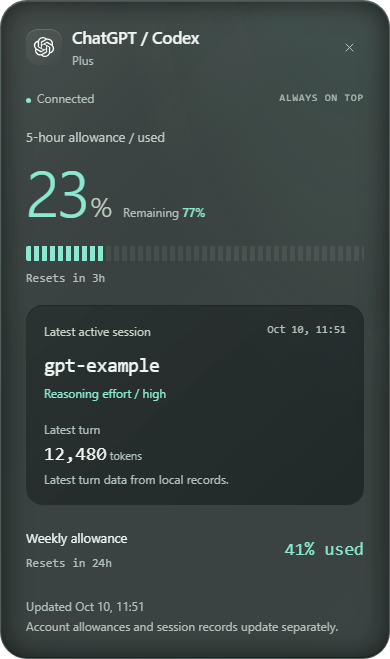
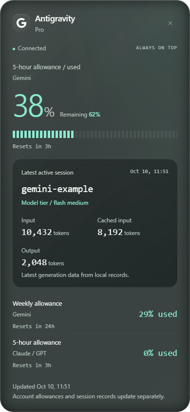
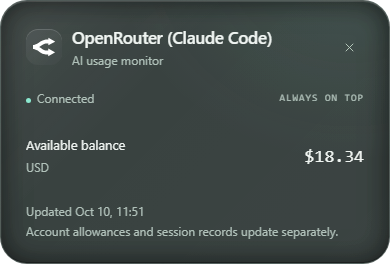
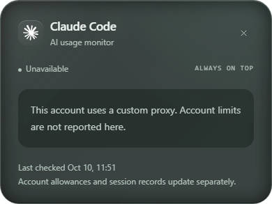

The implemented interface, rendered with synthetic data. These are layout previews, not live account readings.
English throughout. 75% opaque surfaces, a 6px edge trigger, 1-second hover reveal and click-to-toggle details.



